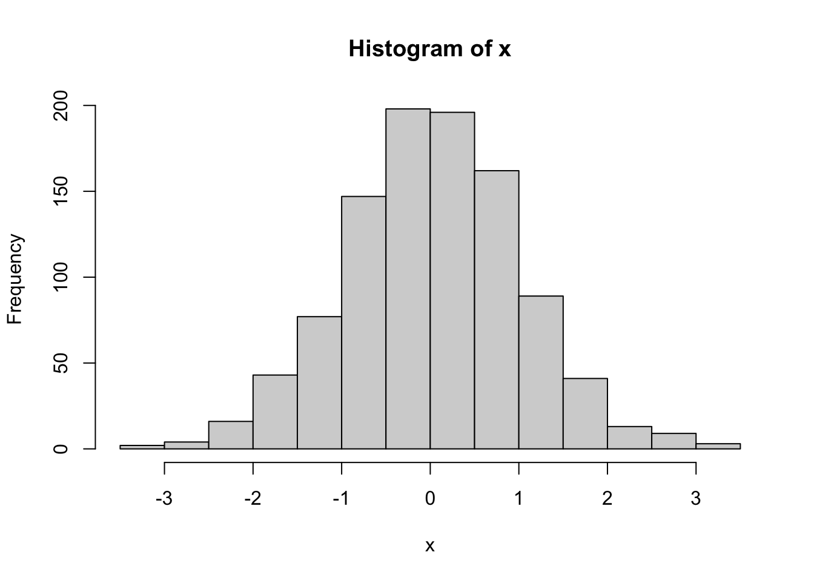
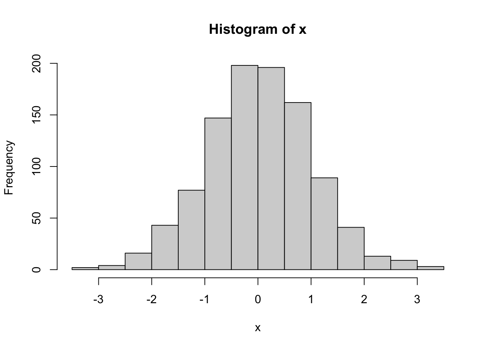
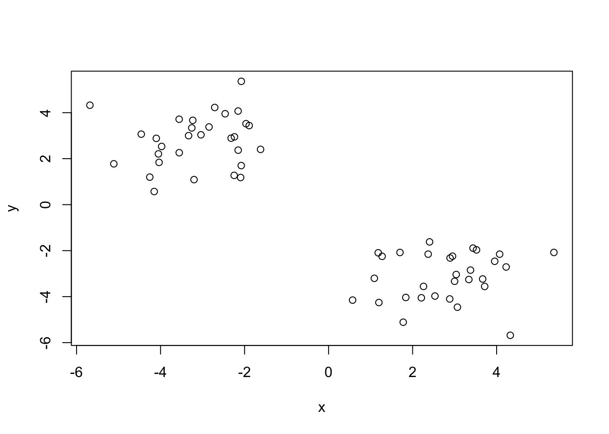
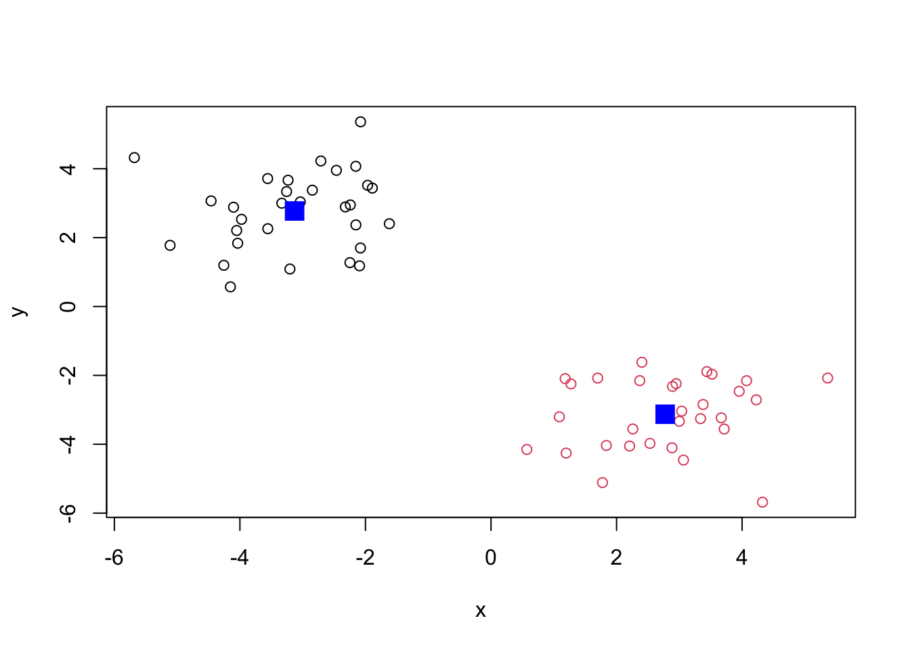
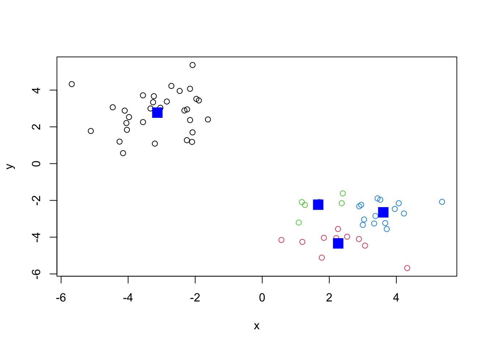
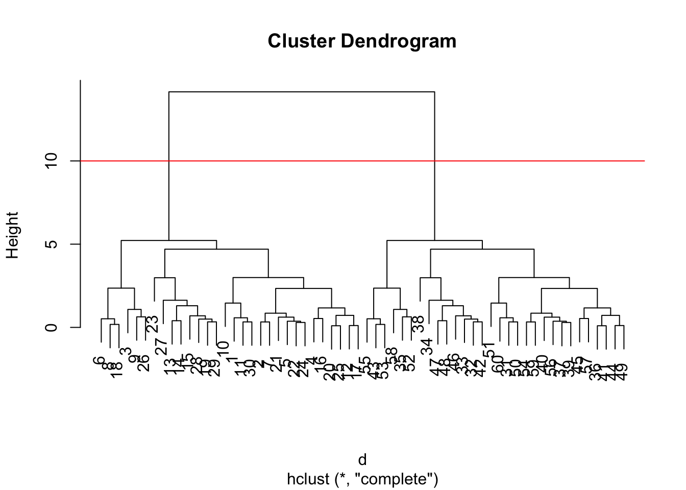
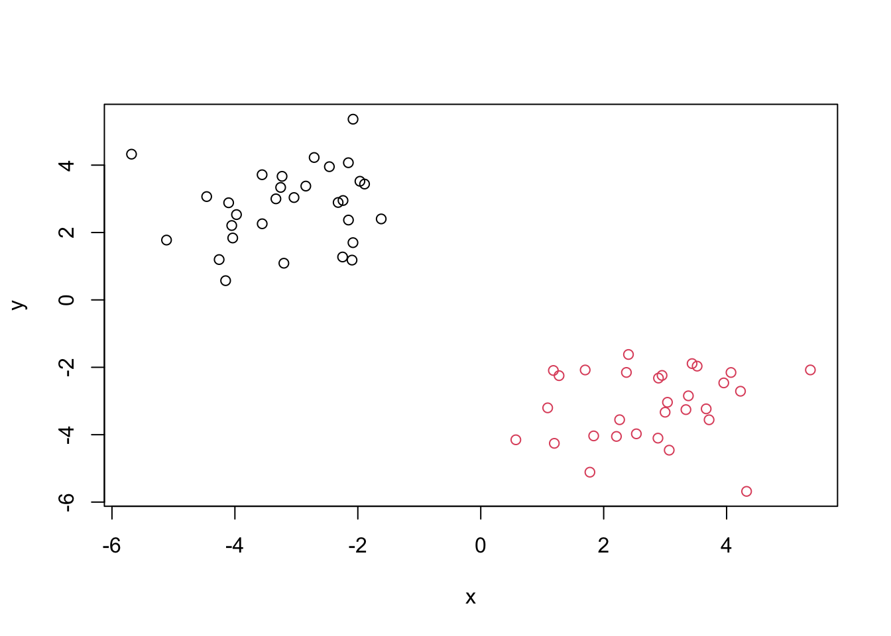
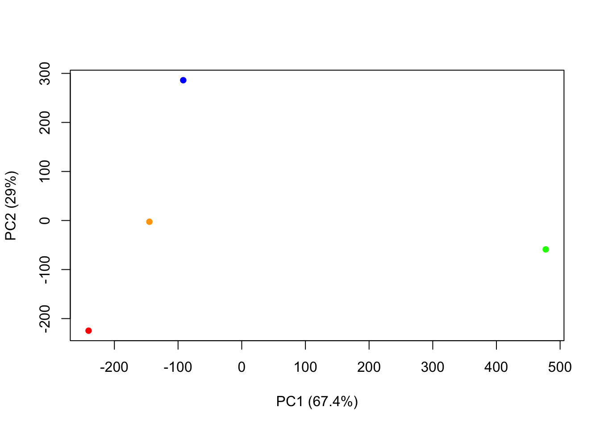

x <- rnorm(1000)
hist(x)
The broad goal here is to find groupings (clusters) in your input data
First, let’s make up some data to cluster.
x <- rnorm(1000)
hist(x)
Normally, these distributions values will be around 0, or where ever you set the average to be.
Make a vector of length 60 with 30 points centered at -3 and 30 points at +3.
tmp <- c(rnorm(30, mean =-3), rnorm(30, mean=3))I will now make a small x and y dataset with 2 groups of points. ‘rev()’ function reverses the vector order.
rev(c(1:5))[1] 5 4 3 2 1x <- cbind(x= tmp, y = rev(tmp))
x x y
[1,] -2.710361 4.225941
[2,] -3.232601 3.667548
[3,] -3.203129 1.088763
[4,] -2.152308 2.369823
[5,] -3.255825 3.338120
[6,] -2.079113 1.699167
[7,] -3.557520 3.714958
[8,] -2.094205 1.181436
[9,] -4.256223 1.197098
[10,] -2.077904 5.362981
[11,] -2.462874 3.953662
[12,] -1.965700 3.520556
[13,] -4.101817 2.883144
[14,] -4.459234 3.066241
[15,] -4.035509 1.837321
[16,] -1.619551 2.403368
[17,] -1.890406 3.438333
[18,] -2.247793 1.274087
[19,] -3.974166 2.531670
[20,] -2.240962 2.949642
[21,] -2.846363 3.378025
[22,] -3.038086 3.037740
[23,] -5.681873 4.324910
[24,] -3.332664 2.999509
[25,] -2.320425 2.891509
[26,] -4.151078 0.570989
[27,] -5.112444 1.775910
[28,] -3.555746 2.259306
[29,] -4.051442 2.207729
[30,] -2.153922 4.071303
[31,] 4.071303 -2.153922
[32,] 2.207729 -4.051442
[33,] 2.259306 -3.555746
[34,] 1.775910 -5.112444
[35,] 0.570989 -4.151078
[36,] 2.891509 -2.320425
[37,] 2.999509 -3.332664
[38,] 4.324910 -5.681873
[39,] 3.037740 -3.038086
[40,] 3.378025 -2.846363
[41,] 2.949642 -2.240962
[42,] 2.531670 -3.974166
[43,] 1.274087 -2.247793
[44,] 3.438333 -1.890406
[45,] 2.403368 -1.619551
[46,] 1.837321 -4.035509
[47,] 3.066241 -4.459234
[48,] 2.883144 -4.101817
[49,] 3.520556 -1.965700
[50,] 3.953662 -2.462874
[51,] 5.362981 -2.077904
[52,] 1.197098 -4.256223
[53,] 1.181436 -2.094205
[54,] 3.714958 -3.557520
[55,] 1.699167 -2.079113
[56,] 3.338120 -3.255825
[57,] 2.369823 -2.152308
[58,] 1.088763 -3.203129
[59,] 3.667548 -3.232601
[60,] 4.225941 -2.710361plot(x)
k <- kmeans (x, centers = 2)
kK-means clustering with 2 clusters of sizes 30, 30
Cluster means:
x y
1 -3.128708 2.774026
2 2.774026 -3.128708
Clustering vector:
[1] 1 1 1 1 1 1 1 1 1 1 1 1 1 1 1 1 1 1 1 1 1 1 1 1 1 1 1 1 1 1 2 2 2 2 2 2 2 2
[39] 2 2 2 2 2 2 2 2 2 2 2 2 2 2 2 2 2 2 2 2 2 2
Within cluster sum of squares by cluster:
[1] 68.44193 68.44193
(between_SS / total_SS = 88.4 %)
Available components:
[1] "cluster" "centers" "totss" "withinss" "tot.withinss"
[6] "betweenss" "size" "iter" "ifault" Q1. From your result object ‘k’ how many points are in each cluster?
k$size[1] 30 30Q2. What “component” of your result object details the cluster membership?
k$cluster [1] 1 1 1 1 1 1 1 1 1 1 1 1 1 1 1 1 1 1 1 1 1 1 1 1 1 1 1 1 1 1 2 2 2 2 2 2 2 2
[39] 2 2 2 2 2 2 2 2 2 2 2 2 2 2 2 2 2 2 2 2 2 2Q3. Cluster centers?
k$centers x y
1 -3.128708 2.774026
2 2.774026 -3.128708Q4. Plot of our clustering results
plot(x, col = k$cluster)
points(k$centers, col="blue", pch=15, cex=2)
a <- kmeans(x, centers = 4)
aK-means clustering with 4 clusters of sizes 30, 10, 6, 14
Cluster means:
x y
1 -3.128708 2.774026
2 2.265432 -4.337953
3 1.669441 -2.232683
4 3.610702 -2.648972
Clustering vector:
[1] 1 1 1 1 1 1 1 1 1 1 1 1 1 1 1 1 1 1 1 1 1 1 1 1 1 1 1 1 1 1 4 2 2 2 2 4 4 2
[39] 4 4 4 2 3 4 3 2 2 2 4 4 4 2 3 4 3 4 3 3 4 4
Within cluster sum of squares by cluster:
[1] 68.441928 13.209725 3.128854 9.733691
(between_SS / total_SS = 92.0 %)
Available components:
[1] "cluster" "centers" "totss" "withinss" "tot.withinss"
[6] "betweenss" "size" "iter" "ifault" plot(x, col = a$cluster)
points(a$centers, col="blue", pch=15, cex=2)
A big limitation is that is does what you ask even if you ask for silly clusters.
The main base R function for Hierarchical Clustering is ‘hclust()’. Unlike ‘kmeans()’ you cannot just pass it your dataset as an input. You first need to calculate a distance matrix.
d <- dist(x)
hc <- hclust(d)
hc
Call:
hclust(d = d)
Cluster method : complete
Distance : euclidean
Number of objects: 60 Use plot() to view results
plot(hc)
abline(h=10, col="red")
To make the “cut” and get our cluster membership vector we can use the ‘cutree()’ function.
grps <- cutree(hc, h=10)
grps [1] 1 1 1 1 1 1 1 1 1 1 1 1 1 1 1 1 1 1 1 1 1 1 1 1 1 1 1 1 1 1 2 2 2 2 2 2 2 2
[39] 2 2 2 2 2 2 2 2 2 2 2 2 2 2 2 2 2 2 2 2 2 2Make a plot of our data colored by hclust results.
plot(x, col=grps)
#Principal Component Analysis (PCA) Here we will do Principal Component Analysis (PCA for short) on some food data from the UK.
url <- "https://tinyurl.com/UK-foods"
UK <- read.csv(url)
UK X England Wales Scotland N.Ireland
1 Cheese 105 103 103 66
2 Carcass_meat 245 227 242 267
3 Other_meat 685 803 750 586
4 Fish 147 160 122 93
5 Fats_and_oils 193 235 184 209
6 Sugars 156 175 147 139
7 Fresh_potatoes 720 874 566 1033
8 Fresh_Veg 253 265 171 143
9 Other_Veg 488 570 418 355
10 Processed_potatoes 198 203 220 187
11 Processed_Veg 360 365 337 334
12 Fresh_fruit 1102 1137 957 674
13 Cereals 1472 1582 1462 1494
14 Beverages 57 73 53 47
15 Soft_drinks 1374 1256 1572 1506
16 Alcoholic_drinks 375 475 458 135
17 Confectionery 54 64 62 41Q1. How many rows and columns are in your new data frame named x? What R functions could you use to answer this questions?
#Code for previewing columns and rows in the UK food dataset
nrow(UK)[1] 17ncol(UK)[1] 5Now we will check our data to make sure that everything is as expected.
#Preview the first 6 rows of data of the UK food dataset
head(UK) X England Wales Scotland N.Ireland
1 Cheese 105 103 103 66
2 Carcass_meat 245 227 242 267
3 Other_meat 685 803 750 586
4 Fish 147 160 122 93
5 Fats_and_oils 193 235 184 209
6 Sugars 156 175 147 139The rows weren’t as we expected, so we should change the columns. Note that the below code though isn’t very good. Rather, we should edit the orginial CSV import to have the rows be -1.
# Note how the minus indexing works
#rownames(UK) <- UK[,1]
#UK <- UK[,-1]
url <- "https://tinyurl.com/UK-foods"
UK <- read.csv(url, row.names = 1)
UK England Wales Scotland N.Ireland
Cheese 105 103 103 66
Carcass_meat 245 227 242 267
Other_meat 685 803 750 586
Fish 147 160 122 93
Fats_and_oils 193 235 184 209
Sugars 156 175 147 139
Fresh_potatoes 720 874 566 1033
Fresh_Veg 253 265 171 143
Other_Veg 488 570 418 355
Processed_potatoes 198 203 220 187
Processed_Veg 360 365 337 334
Fresh_fruit 1102 1137 957 674
Cereals 1472 1582 1462 1494
Beverages 57 73 53 47
Soft_drinks 1374 1256 1572 1506
Alcoholic_drinks 375 475 458 135
Confectionery 54 64 62 41head(UK) England Wales Scotland N.Ireland
Cheese 105 103 103 66
Carcass_meat 245 227 242 267
Other_meat 685 803 750 586
Fish 147 160 122 93
Fats_and_oils 193 235 184 209
Sugars 156 175 147 139Now lets check the dimensions again
dim(UK)[1] 17 4Q2. Which approach to solving the ‘row-names problem’ mentioned above do you prefer and why? Is one approach more robust than another under certain circumstances?
We prefer to edit the CSV file, since the actual edit to the output can manipulate the data to have the incorrect dimensions.
Q3: Changing what optional argument in the above barplot() function results in the following plot?
#Changing T -> F changes the plot to the one above
barplot(as.matrix(UK), beside=F, col=rainbow(nrow(UK)))
Q5: Generating all pairwise plots may help somewhat. Can you make sense of the following code and resulting figure? What does it mean if a given point lies on the diagonal for a given plot?
The following code generates pairwise plots, pch changes the plotting character. If a given point lies on the diagonal, it means it is being compared to itself.
pairs(UK, col=rainbow(10), pch=16)
##PCA to the rescue
The main “base” R function for PCA is called ‘prcomp()’.
pca <- prcomp(t(UK))
summary(pca)Importance of components:
PC1 PC2 PC3 PC4
Standard deviation 324.1502 212.7478 73.87622 3.176e-14
Proportion of Variance 0.6744 0.2905 0.03503 0.000e+00
Cumulative Proportion 0.6744 0.9650 1.00000 1.000e+00Q. How much variance is captured in 2 PCs? 96.5%
To make our main “PC score plot” or PC1 vs PC2 plot (aka “PC1” v.s. “PC2” plot or “PC plot” or “ordination plot”. )
attributes(pca)$names
[1] "sdev" "rotation" "center" "scale" "x"
$class
[1] "prcomp"We are after the ‘pca$x’ result component to make our main PCA plot.
mycols <- c("orange", "red", "blue", "green")
plot(pca$x[,1], pca$x[,2], col=mycols, pch=16, xlab="PC1 (67.4%)", ylab="PC2 (29%)")